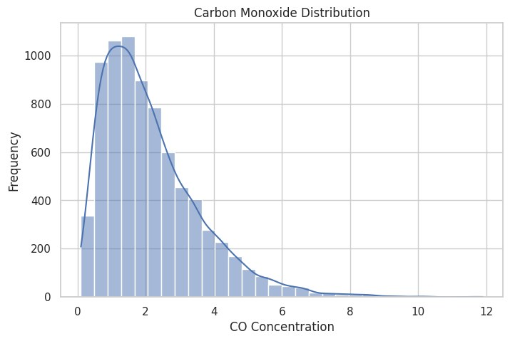
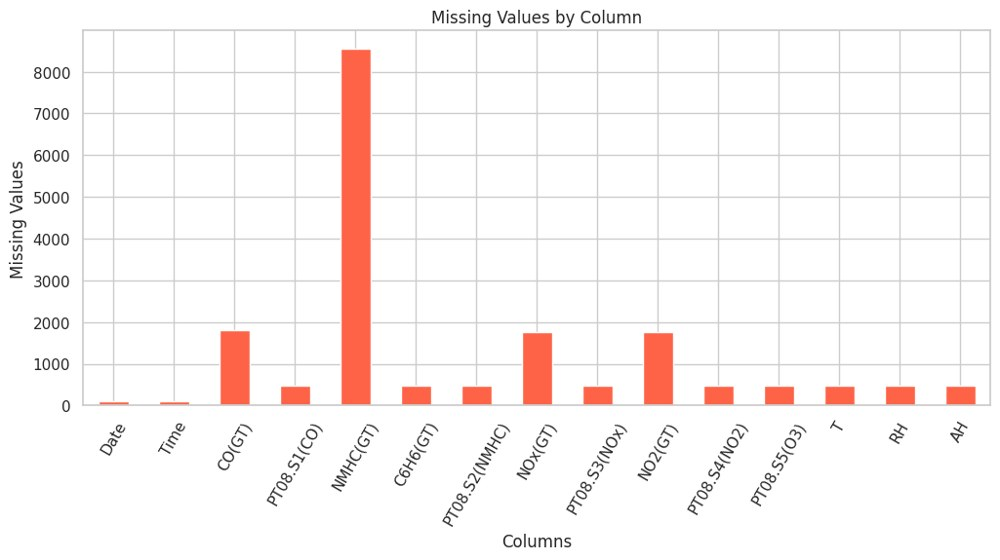
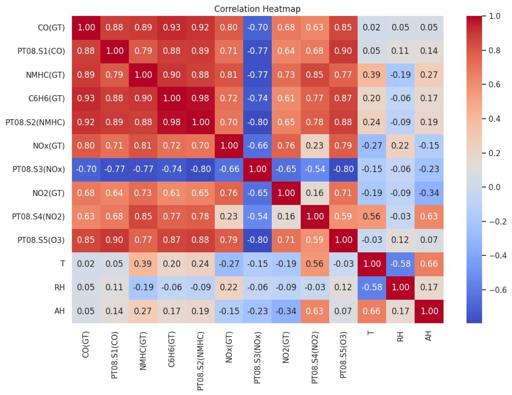
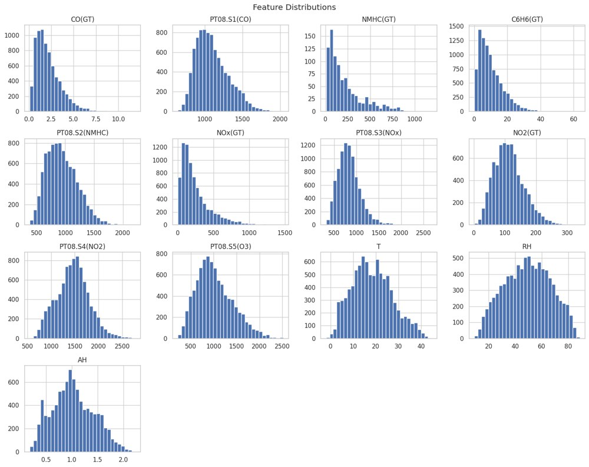
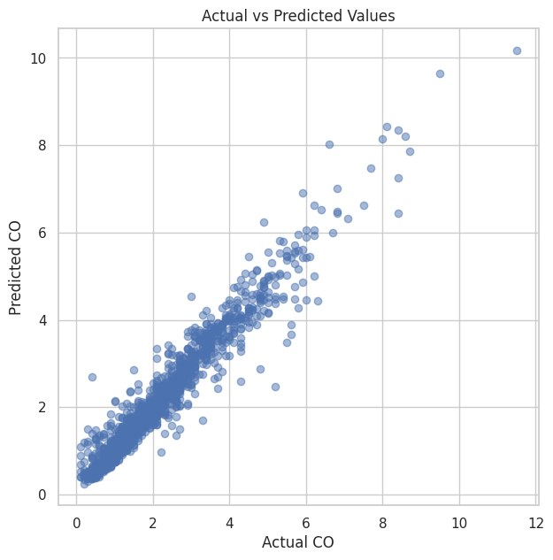
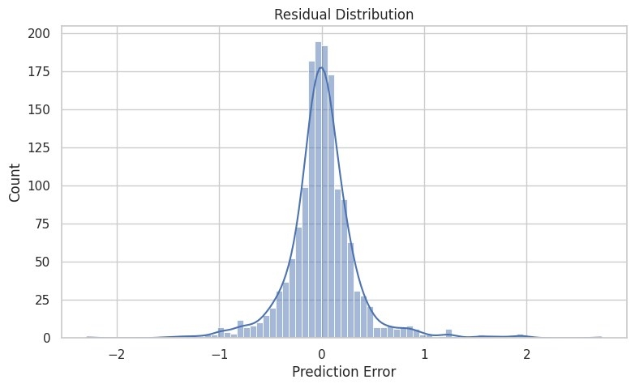
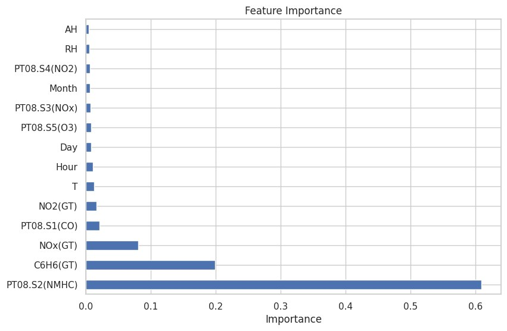

Understanding Air Quality Through Machine Learning.
An intelligent data-driven approach to predicting carbon monoxide concentration through environmental measurements and advanced regression algorithms.
Turning Environmental Data Into Insights
This project studies hourly air-quality sensor readings and asks whether carbon monoxide concentration can be predicted from the other pollutant, sensor and weather measurements recorded alongside it.
What drives CO levels?
Understanding and predicting carbon monoxide concentration using historical environmental measurements.
From raw sensors to models
Data preprocessing, exploratory data analysis, feature engineering, supervised machine learning and regression evaluation.
Find the best regressor
Compare multiple regression algorithms and identify the best-performing model using appropriate evaluation metrics.
Inside the Dataset
The UCI Air Quality dataset holds hourly responses of a gas multisensor device deployed in an Italian city, alongside reference analyzer readings for CO, benzene, NOx and NO2, plus temperature and humidity.
Original UCI metadata
Multivariate time-series dataset. Target variable: CO(GT).
Actual shapes in the notebook (executed output)
The notebook's CSV loads 9,471 rows, of which 9,357 are non-null. The remaining 114 are empty rows (the "114 missing" shown for every column, including Date). After replacing -200 with NaN and dropping rows with no CO(GT) or no valid DateTime, 7,674 rows remain.
Feature descriptions (15 original columns)
| Feature | Description | Role in notebook |
|---|
Discovering Patterns in Air Quality
These are the original figures exported from the executed notebook, shown unaltered on a light plate so their colors stay faithful in both themes.
Carbon Monoxide Distribution

Histogram with density curve; x: CO concentration, y: frequency. The distribution is right-skewed, with most readings low and a long tail of high values.
Missing Values by Column

Bar chart after -200 was converted to NaN; x: columns, y: missing values. NMHC(GT) is missing far more than any other column.
Correlation Heatmap

Pearson correlations across numeric columns (computed before NMHC(GT) was dropped). Red indicates strong positive, blue negative correlation.
Feature Distribution Histograms

30-bin histograms per feature; x: feature value, y: frequency. Shapes differ widely: pollutant concentrations skew right, while T, RH and AH are broader.
What the notebook shows
CO is right-skewed
Most CO(GT) readings sit roughly between 0 and 4, with a long tail reaching about 12.
NMHC(GT) is mostly missing
Its missing count (roughly 8,500 on the chart) dwarfs all others, which is consistent with dropping it before modelling. CO(GT), NOx(GT) and NO2(GT) each show roughly 1,700–1,800 missing.
Pollutants move together
CO(GT) correlates strongly with C6H6(GT) (0.93), PT08.S2(NMHC) (0.92), NMHC(GT) (0.89), PT08.S1(CO) (0.88), PT08.S5(O3) (0.85) and NOx(GT) (0.80); PT08.S3(NOx) is negative (-0.70).
Weather is weakly linked
T (0.02), RH (0.05) and AH (0.05) show almost no linear correlation with CO(GT).
Strong multicollinearity
C6H6(GT) and PT08.S2(NMHC) correlate at 0.98, so several predictors carry overlapping information.
Preparing Data for Intelligence
Eleven steps, reproduced in the order they happen in the notebook. Select a step to see the code detail. Step 9 is a random split, not a chronological time-series split.
Order note: the -200 → NaN replacement runs inside the EDA cell on the main DataFrame, before the cleaned copy is made. The Unnamed columns were already removed when all-empty columns were dropped at load; the later drop uses errors="ignore".
Four Algorithms. One Prediction Goal.
Linear Regression
Models the target as a weighted sum of the input features, fitting the weights that minimise squared error. It assumes a linear relationship between predictors and CO(GT).
Principle: least squares fit of one coefficient per feature.
Decision Tree Regressor
Repeatedly splits the data with threshold questions on features, then predicts the average target value of the samples in each leaf. random_state=42.
Principle: choose splits that reduce variance in the target.
Random Forest Regressor
Trains many decision trees on different bootstrap samples and averages their predictions, which stabilises the high variance of a single tree. n_estimators=100, random_state=42, n_jobs=-1.
Principle: average of independent trees.
Gradient Boosting Regressor
Builds trees one after another, each fitted to the errors left by the ensemble so far. Default scikit-learn settings with random_state=42.
Principle: sequential correction of residual errors.
Measuring Predictive Performance
Each algorithm sits inside a scikit-learn Pipeline: median imputation, then StandardScaler, then the model. All are trained on the same 80% split and scored on the held-out 20%.
- Split: 80% train (6,139 rows) / 20% test (1,535 rows), random_state=42
- Imputer: SimpleImputer(strategy="median")
- Scaler: StandardScaler
MAE (Mean Absolute Error): average absolute prediction error; lower is better.
RMSE (Root Mean Squared Error): like MAE but penalises large errors more; lower is better.
R² (Coefficient of Determination): share of target variance explained; higher is better.
| Model | MAE | RMSE | R² score |
|---|
How Accurate Are the Predictions?
Plots below are for the best model (Random Forest), except feature importance, which is by definition a Random Forest output. Figures are exported from the notebook.
Actual vs Predicted CO

Each point is one test sample: actual CO on x, predicted CO on y. A perfect model would put every point on the diagonal y = x (the notebook's plot does not draw that line). Points here cluster tightly along it, with more scatter at higher CO values, where there are fewer samples.
Residual Distribution

Residual = actual − predicted. The distribution peaks near zero and is roughly symmetric, with most errors within about ±1 and a few outliers reaching roughly −2.3 to +2.7. A centred, narrow shape indicates no obvious systematic bias.
Random Forest Feature Importance

PT08.S2(NMHC) dominates at roughly 0.6, followed by C6H6(GT) at about 0.2 and NOx(GT) near 0.08. All other features, including the engineered Hour, Day and Month, contribute little. Values are read from the chart; the notebook did not print them.
The Winning Model
Selected exactly as in the notebook: the model with the lowest RMSE on the test set.
Random Forest has the lowest RMSE (0.3536) and MAE (0.2247) and the highest R² of the four models, ahead of Gradient Boosting (RMSE 0.3671). Both ensembles beat the single Decision Tree (RMSE 0.5417) and Linear Regression (RMSE 0.4693). This is consistent with averaging many trees reducing a single tree's variance, and with tree ensembles capturing non-linear structure a linear model cannot. The notebook does not test these causes directly. R² is displayed rounded from 0.939961.
What Did We Learn?
The raw UCI file contained empty rows and sensor gaps coded as -200. Converting these to NaN revealed that NMHC(GT) was mostly missing, so it was removed, and rows lacking CO(GT) or a valid timestamp were dropped, leaving 7,674 rows. Date and Time were combined into a DateTime from which Hour, Day and Month were engineered.
Four regression algorithms (Linear Regression, Decision Tree, Random Forest and Gradient Boosting) were trained in identical pipelines with median imputation and standard scaling, and compared with MAE, RMSE and R². Random Forest performed best (MAE 0.2247, RMSE 0.3536, R² ≈ 0.94), with Gradient Boosting a close second. Its feature importances were dominated by PT08.S2(NMHC) and C6H6(GT), in line with their strong correlations with CO(GT).
Limitations
- The data are historical air-quality measurements from an Italian city.
- Sensor measurements may contain noise and missing values.
- Performance on this dataset does not guarantee performance in other geographical regions.
- The project uses historical data and does not provide live air-quality monitoring.
- The split is random, so neighbouring hours can appear in both train and test sets; results may be optimistic compared with forecasting future data.
Even a straightforward pipeline can turn noisy sensor streams into accurate pollutant estimates, which suggests machine learning is a practical tool for environmental data analysis, provided its limits are understood.